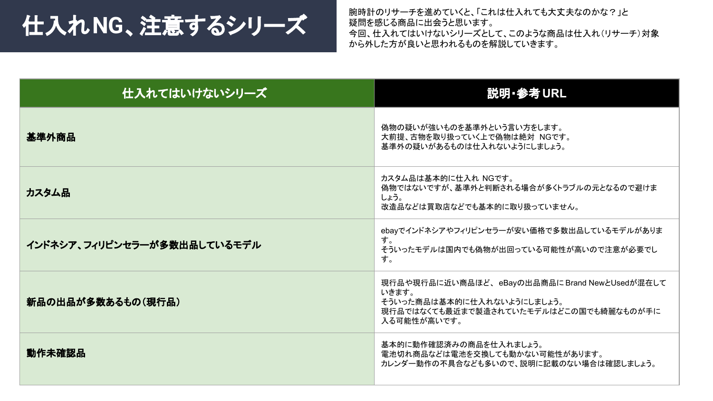

基準外商品
FAKE RISK偽物の疑いが強いもの。古物を扱う上で偽物は絶対NGです。
- ロゴ、ラグ、ムーブメントの違和感を見る
- 保証書や整備履歴が弱い個体は慎重に判断
リサーチ中に「これは大丈夫？」と迷ったとき、最初に除外すべき5分類をまとめました。
時計は偽物、改造、動作不良が絡むと出品後のリスクが大きくなります。迷った商品は、まずこの5分類に該当しないかを確認してください。
この5つに当てはまったら、基本的にはリサーチ対象から外します。
偽物の疑いが強いもの。古物を扱う上で偽物は絶対NGです。
偽物ではなくても基準外と判断される場合があり、トラブルの元になりやすい商品です。
インドネシアやフィリピンのセラーが安価で大量出品しているモデルは、国内でも偽物が出回る可能性があります。
現行品や現行品に近い商品は、eBay上で新品と中古が混在し、価格競争になりやすい領域です。
電池切れに見えても、交換後に動かない可能性があります。カレンダー不具合なども見落としやすいです。
「安いから仕入れる」ではなく、「説明できるから仕入れる」。説明できない違和感がある個体は、利益候補ではなく事故候補として扱います。

NG分類を理解したら、実例を見ながら違和感の見つけ方を確認します。